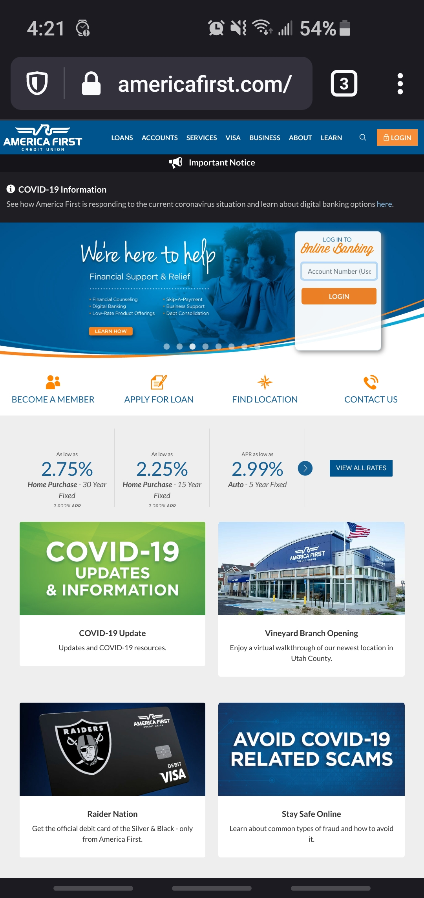

Visual Hiearchy
AFCU
americafirst.com
I think that the site AFCU shows off visual hiearchy very well. They do this with typography. Your eye is drawn to the type that appears the biggest. So the way the text is layed out on this page is done in a way that was intentionally designed so you would read first what they wanted you to read.
Repetition
Little Ceasars
littleceasars.com
Repetition is done well on the Little Ceasars site by its use of color. This color of orange used to show repetition for the site. As you scroll down the site the color orange is used in these big boxes for more appeal to each subject. It also makes you associate their company with this color orange.
Proximity
Best Buy
bestbuy.com
Proximity is about placing things together to show a relationship between elements and to show that they go along with each other. For the Best Buy website they use this principle by grouping different text elements together. The first group of text above the picture is a title, a description, and some links. They are all different elements but are grouped together with proximity to show that they are all related.